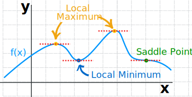
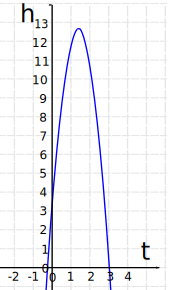
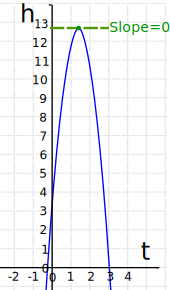
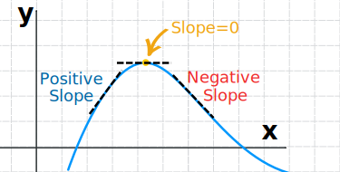
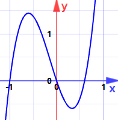
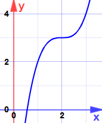

Finding Maxima and Minima using Derivatives
Where is a function at a high or low point? Calculus can help!
A maximum is a high point and a minimum is a low point:

In a smoothly changing function a maximum or minimum is always where the function flattens out (except for a saddle point).
Where does it flatten out? Where the slope is zero.
Where is the slope zero? The Derivative tells us!
Let's dive right in with an example:

Example: A ball is thrown in the air. Its height at any time t is given by:
h = 3 + 14t − 5t2
What is its maximum height?
Using derivatives we can find the slope of that function:
ddth = 0 + 14 − 5(2t)
= 14 − 10t
(See below this example for how we found that derivative.)

Now find when the slope is zero:
The slope is zero at t = 1.4 seconds
And the height at that time is:
And so:
The maximum height is 12.8 m (at t = 1.4 s)
A Quick Refresher on Derivatives
A derivative basically finds the slope of a function.
In the previous example we took this:
h = 3 + 14t − 5t2
and came up with this derivative:
ddth = 0 + 14 − 5(2t)
= 14 − 10t
Which tells us the slope of the function at any time t

We used these Derivative Rules:
- The slope of a constant value (like 3) is 0
- The slope of a line like 2x is 2, so 14t has a slope of 14
- A square function like t2 has a slope of 2t, so 5t2 has a slope of 5(2t)
- And then we added them up: 0 + 14 − 5(2t)
How Do We Know it is a Maximum (or Minimum)?
We saw it on the graph! But otherwise ... derivatives come to the rescue again.
Take the derivative of the slope (the second derivative of the original function):
The Derivative of 14 − 10t is −10
This means the slope is continually getting smaller (−10): traveling from left to right the slope starts out positive (the function rises), goes through zero (the flat point), and then the slope becomes negative (the function falls):

A slope that gets smaller (and goes though 0) means a maximum.
This is called the Second Derivative Test
On the graph above I showed the slope before and after, but in practice we do the test at the point where the slope is zero:
Second Derivative Test
When a function's slope is zero at x, and the second derivative at x is:
- less than 0, it is a local maximum
- greater than 0, it is a local minimum
- equal to 0, then the test fails (there may be other ways of finding out though)
"Second Derivative: less than 0 is a maximum, greater than 0 is a minimum"
Example: Find the maxima and minima for:
y = 5x3 + 2x2 − 3x
The derivative (slope) is:
ddxy = 15x2 + 4x − 3
Which is quadratic with zeros at:
- x = −3/5
- x = +1/3
Could they be maxima or minima? (Don't look at the graph yet!)
The second derivative is y'' = 30x + 4
At x = −3/5:
At x = +1/3:
(Now you can look at the graph.)

Words
A high point is called a maximum (plural maxima).
A low point is called a minimum (plural minima).
The general word for maximum or minimum is extremum (plural extrema).
We say local maximum (or minimum) when there may be higher (or lower) points elsewhere but not nearby.
One More Example
Example: Find the maxima and minima for:
y = x3 − 6x2 + 12x − 5
The derivative is:
ddxy = 3x2 − 12x + 12
Which is quadratic with only one zero at x = 2
Is it a maximum or minimum?
The second derivative is y'' = 6x − 12
At x = 2:
And here is why:

It is an Inflection Point ("saddle point") ... the slope does become zero, but it is neither a maximum nor minimum.
Must Be Differentiable
And there is an important technical point:
The function must be differentiable (the derivative must exist at each point in its domain).
Example: How about the function f(x) = |x| (absolute value) ?
| |x| looks like this: |  |
At x=0 it has a very pointy change!
In fact it is not differentiable there (as shown on the differentiable page).
So we can't use the derivative method for the absolute value function.
The function must also be continuous, but any function that is differentiable is also continuous, so we are covered.